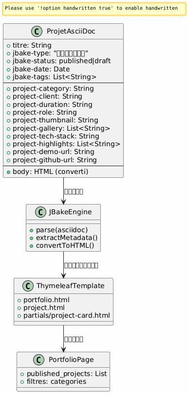
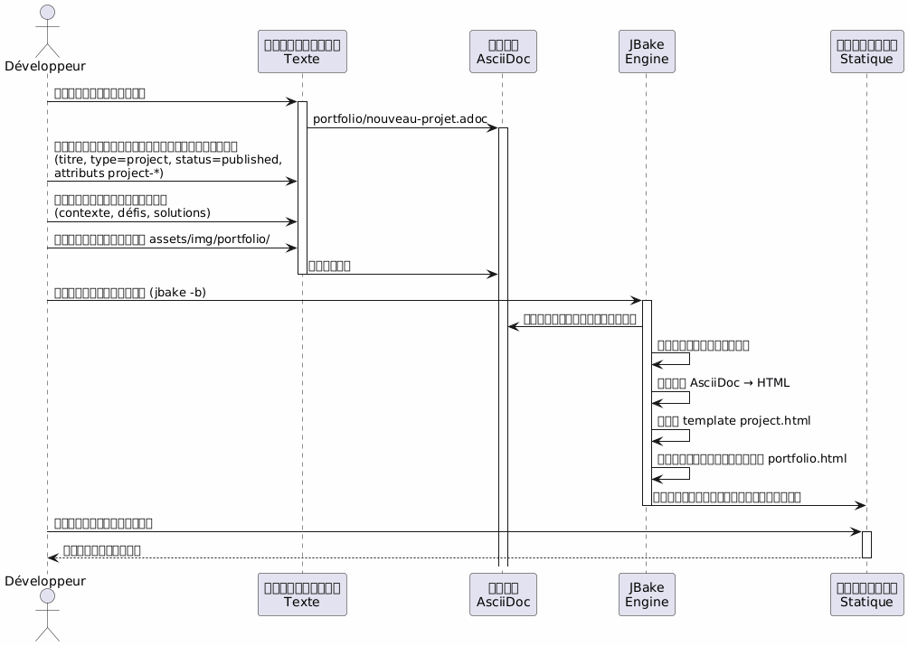
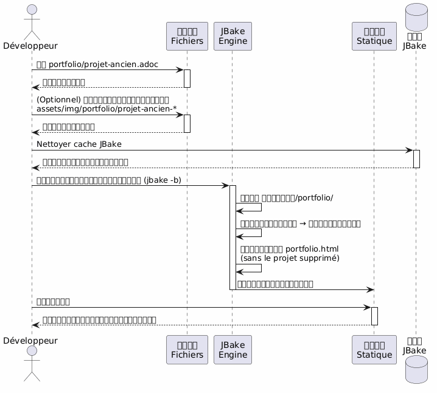
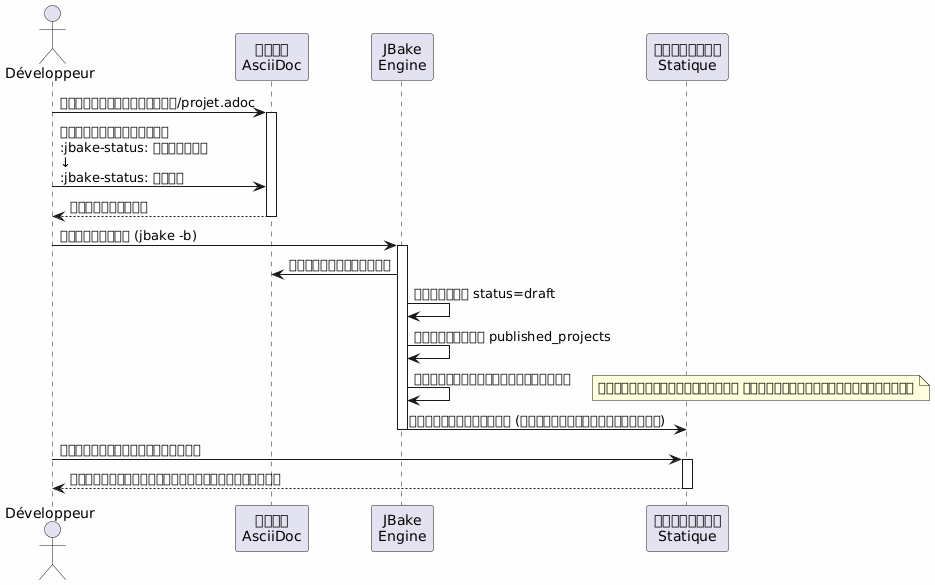
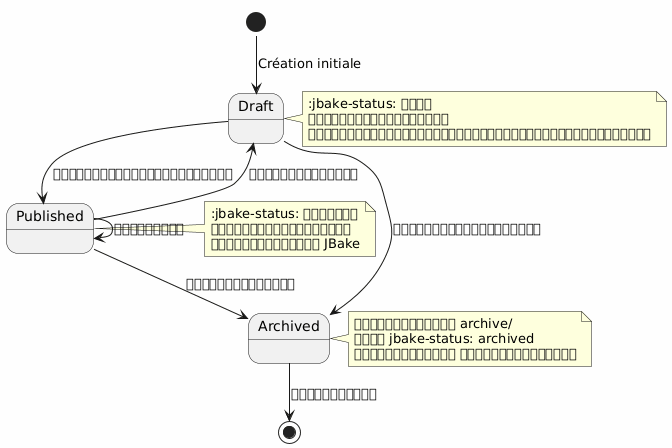
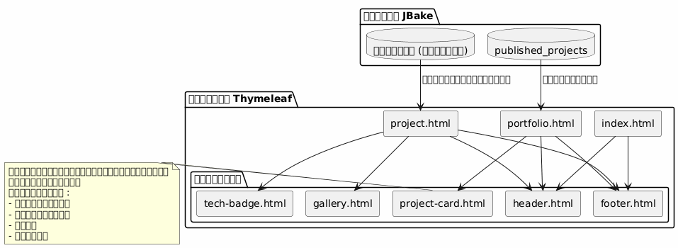
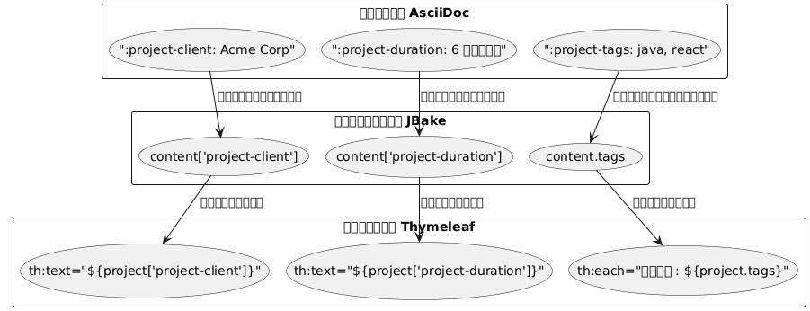
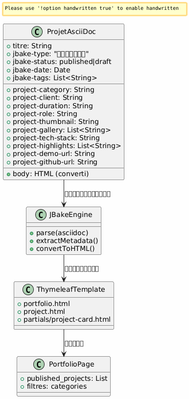
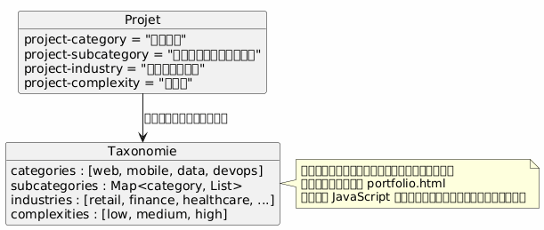

สถาปัตยกรรมพอร์ตโฟลิโอ JBake - วิสัยทัศน์และกรณีการใช้งาน
เผยแพร่เมื่อ 15 January 2026
วิสัยทัศน์ด้านสถาปัตยกรรม
หลักการนำทาง
สถาปัตยกรรมมีพื้นฐานอยู่บนหลักการของ การแยกความกังวล
-
เนื้อหา : ไฟล์ AsciiDoc ที่มีโครงสร้างพร้อมด้วยเมตาดาต้าที่อุดมสมบูรณ์
-
การนำเสนอ : เทมเพลต Thymeleaf ที่สามารถใช้ซ้ำได้
-
ข้อมูล : แบบจำลองที่ดึงออกโดยอัตโนมัติจาก JBake จากแอตทริบิวต์ของ AsciiDoc
-
Style : Bootstrap 5 เพื่อความสอดคล้องทางภาพ
ตัวเลือกเชิงกลยุทธ์: AsciiDoc สำหรับพอร์ตโฟลิโอ
| เกณฑ์ | ข้อได้เปรียบ |
|---|---|
ความสอดคล้อง |
รูปแบบเดียวกับบทความบล็อก |
ข้อมูลเมตา |
แอตทริบิวต์เชิงโครงสร้างและขยายได้`project-*`) |
ความสามารถในการบำรุงรักษา |
การแก้ไขข้อความแบบง่าย ๆ รองรับการควบคุมเวอร์ชันด้วย Git |
ความยืดหยุ่น |
อาจมีเนื้อหาที่อุดมสมบูรณ์ (ตาราง, โค้ด, รูปภาพ) |
การกำหนดเทมเพลต |
JBake ดึงแอตทริบิวต์โดยอัตโนมัติสำหรับ Thymeleaf |
โมเดลข้อมูล
แต่ละโครงการพอร์ตโฟลิโอเป็นเอกสาร AsciiDoc ที่มี :
-
ข้อมูลเมตาดาต้าในส่วนหัว : ข้อมูลที่จัดโครงสร้าง (ลูกค้า, ระยะเวลา, เทคโนโลยี ฯลฯ)
-
Corps du document : คำบรรยายเชิงเรื่องราว, ความท้าทาย, วิธีแก้ปัญหา, ผลลัพธ์
-
แอตทริบิวต์ที่กำหนดเอง : ต่อคำนำหน้า`project-*`เพื่อการสกัดอัตโนมัติ

การใช้งานโดยละเอียด
UC1 : เพิ่มไอเท็มลงในพอร์ตโฟลิโอ
ฟลักซ์โนมินัล

เทมเพลตไฟล์ที่จะสร้าง
ผู้พัฒนาสร้าง`content/portfolio/nom-projet.adoc`ด้วยโครงสร้างมาตรฐาน:
-
ส่วนหัวที่มีแอตทริบิวต์ที่จำเป็นทั้งหมด
-
ส่วนมาตรฐาน (บริบท, ความท้าทาย, วิธีแก้, ผลลัพธ์)
-
ชื่อเรียกภาพที่สอดคล้อง
จุดตรวจสอบความถูกต้อง
-
คุณสมบัติที่จำเป็นมีอยู่`jbake-type`,
jbake-status,project-thumbnail) -
ภาพที่อ้างถึงมีอยู่ใน`assets/img/portfolio/`
-
บิลด์ JBake สำเร็จโดยไม่มีข้อผิดพลาด
-
โครงการปรากฏบนหน้า portfolio
-
หน้าเฉพาะของโครงการแสดงผลอย่างถูกต้อง
UC2 : ลบรายการออกจากพอร์ตโฟลิโอ
ฟลักซ์มาตรฐาน

กลยุทธ์ทางเลือก: การจัดเก็บถาวร
แทนที่จะลบออกอย่างถาวร คุณสามารถสร้างโฟลเดอร์ได้`content/portfolio/archive/` :
-
ย้ายไฟล์แทนที่จะลบมัน
-
ทำให้สามารถกู้คืนได้อย่างง่ายดาย
-
รักษาประวัติ Git ให้ชัดเจนขึ้น
ทำความสะอาดทรัพยากร
-
ตรวจสอบภาพที่กำพร้าใน`assets/img/portfolio/`
-
ลบภาพที่ไม่ได้ถูกอ้างอิงโดยโครงการอื่น
-
ทำความสะอาดแคช JBake เพื่อหลีกเลี่ยงการอ้างอิงผี
UC3 : ตั้งเป็นร่าง (draft)
ฟลักซ์โนมินัล

สถานะที่เป็นไปได้

กรณีการใช้งานทั่วไป
-
โครงการที่กำลังอยู่ในขั้นตอนการร่าง : สร้างเป็นฉบับร่าง, เผยแพร่เมื่อพร้อม
-
โครงการที่เป็นความลับชั่วคราว : ตั้งเป็นร่างจนกว่าจะได้ข้อตกลงจากลูกค้า
-
การอัปเดตหลัก : เปลี่ยนเป็นร่าง, แก้ไข, เผยแพร่ซ้ำ
-
A/B testing : ทำซ้ำเป็นร่าง, ทดสอบ, เผยแพร่เวอร์ชันที่ดีที่สุด
สถาปัตยกรรมของเทมเพลต
กลยุทธ์เทมเพลตที่สามารถใช้ซ้ำได้

รูปแบบการสกัดข้อมูล
JBake จะทำการแปลงอัตโนมัติของคุณลักษณะ AsciiDoc เป็นคุณสมบัติที่สามารถเข้าถึงได้ใน Thymeleaf :

หลักเกณฑ์การตั้งชื่อ
-
คุณลักษณะโครงการ : คำนำหน้า`project-*` (ex:
project-client,project-tech-stack) -
ไฟล์ : kebab-case (ตัวอย่าง:`ecommerce-platform.adoc`)
-
Images : คำนำหน้าชื่อโครงการ (เช่น:`ecommerce-platform-thumb.jpg`)
-
Templates : ชื่อฟังก์ชั่น (ex:`project-card.html`,
tech-badge.html)
เวิร์กโฟลว์การเผยแพร่
กระบวนการพัฒนา

สภาพแวดล้อม
| สภาพแวดล้อม | การใช้งาน | สถานะที่ยอมรับ |
|---|---|---|
ท้องถิ่น |
การพัฒนาและการแสดงตัวอย่าง |
ฉบับร่าง, เผยแพร่ |
การเตรียมความพร้อม |
การตรวจสอบก่อนการผลิต |
เผยแพร่เฉพาะ |
การผลิต |
เว็บไซต์สาธารณะ |
เผยแพร่เท่านั้น |
ความสามารถในการขยาย
การเพิ่มคุณสมบัติใหม่
เพื่อเสริมสร้างโมเดลข้อมูล ให้เพียงเพิ่มคุณสมบัติใหม่ที่มีการกำหนดชื่อขึ้นต้น`project-*`(No output provided)
-
`project-awards`รางวัลและการยอมรับ
-
`project-testimonial`ใบเสนอราคาลูกค้า
-
`project-team-size`ขนาดทีม
-
`project-budget-range`ช่วงงบประมาณ
คุณลักษณะเหล่านี้พร้อมใช้งานโดยอัตโนมัติในเทมเพลตโดยไม่ต้องแก้ไขเอนจิน JBake.
การจัดหมวดหมู่ขั้นสูง

แนวทางการปฏิบัติที่ดี
การจัดระเบียบไฟล์
-
หนึ่งไฟล์ = หนึ่งโครงการ : หลีกเลี่ยงการผสมหลายโครงการ
-
รูปภาพในโฟลเดอร์เฉพาะ`assets/img/portfolio/nom-projet/`
-
การตั้งชื่ออย่างสม่ำเสมอ
-
Versioning Git : การติดตามการแก้ไขแบบครบถ้วน
การจัดการเนื้อหา
-
satus draft par défaut : publier seulement quand prêt becomes:
สถานะดราฟต์โดยค่าเริ่มต้น : เผยแพร่เฉพาะเมื่อพร้อม
-
Review ก่อนการเผยแพร่ : การตรวจสอบคุณภาพและความลับ
-
ข้อมูลเมตาครบถ้วน : กรอกฟิลด์ทั้งหมดที่เกี่ยวข้อง
-
เนื้อเรื่องที่อุดมสมบูรณ์ : อย่าจำกัดตัวเองอยู่ที่เมตาดาต้า
ประสิทธิภาพ
-
การบีบอัดภาพ : การบีบอัดก่อน commit
-
การแบ่งหน้าเมื่อจำเป็น : ถ้า >20 โครงการ
-
การโหลดเมื่อต้องการ : รูปภาพของแกลเลอรี่ที่โหลดเมื่อต้องการ
-
Cache เบราว์เซอร์ : headers ที่เหมาะสมสำหรับทรัพย์สิน
สรุป
สถาปัตยกรรมนี้ทำให้ :